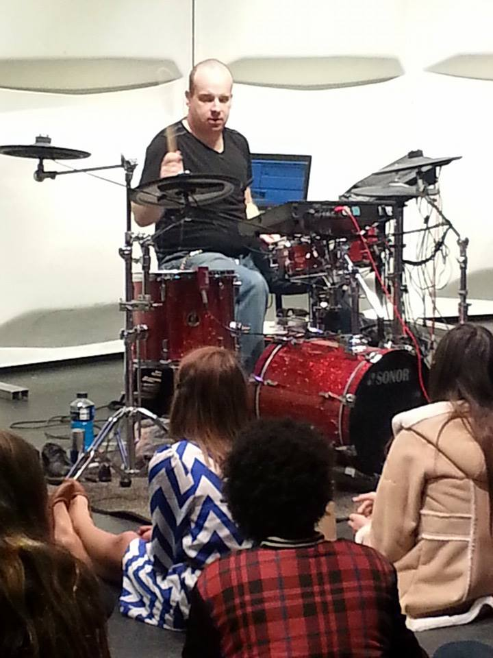
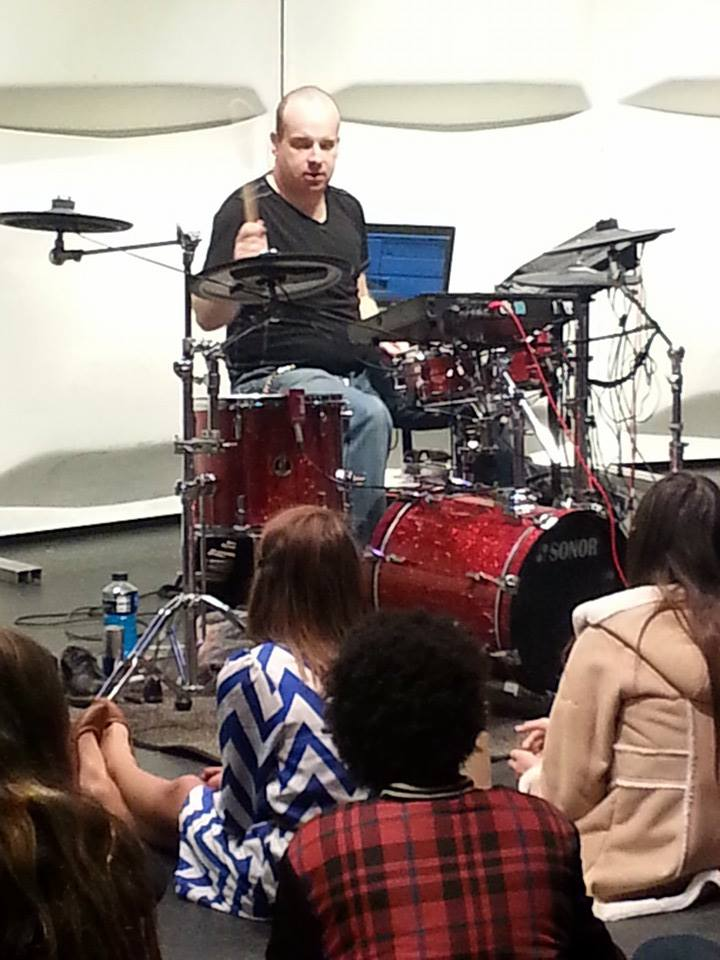
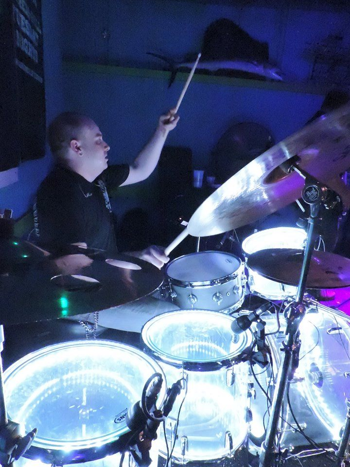
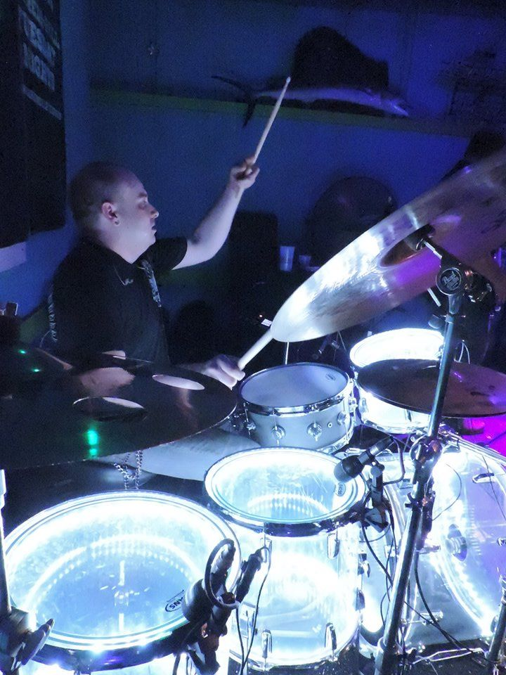
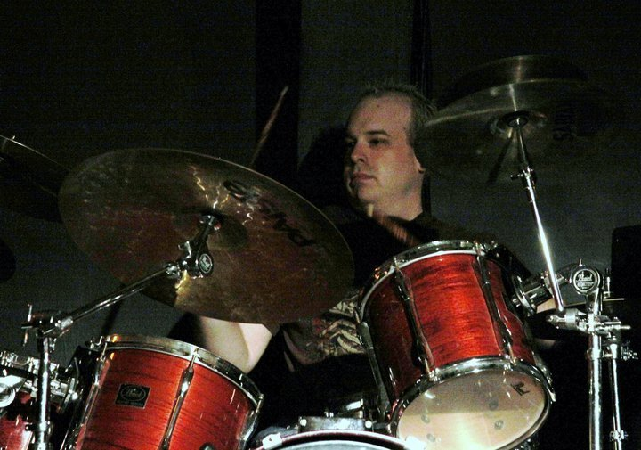
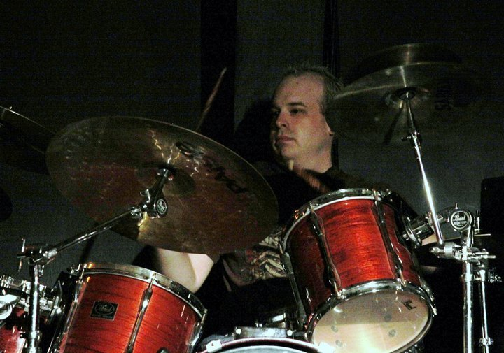

Pictures
 

 

 

Videos
Playing "Mary Jane's Last Dance/Colt .45" with Trey Lewis at Bourbon Street Bar in Auburn, AL
Playing "Take a Little Ride" by Jason Aldean with Trey Lewis at Bourbon Street Bar in Auburn, AL
Playing a medley of songs with Matt Bennett and Sam Rife at Tin Roof in Memphis, TN on New Year's Eve 2022
Playing "Save Tonight" with Rebel at Rick's Cafe in Starkville, MS.
Playing the songo track from the Jim Riley book "Survival Guide for the Modern Drummer". I recorded this is my dad's basement while visiting him during spring break a few years ago. :-)
Another cut from the "Spring Break Basement Sessions", this is track 4 "Swung 16th Note Pop" from the Jim Riley Book